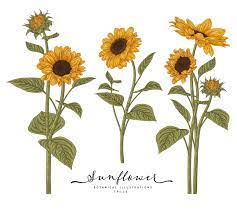
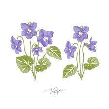
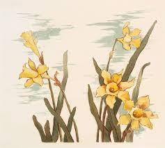
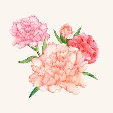
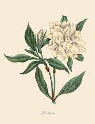

Understanding Floriography
Significance of Flowers Throughout History
Flowers have been utilized for symbolism, festivals, messages, and in many different cultural customs for many centuries. From the ancient Greeks who used them as props for storytelling to the Victorians who used them to communicate coded messages. In fact, using flowers to communicate coded messages became so popular during the Victorian Era, that a name was given to it: floriography, meaning the language of flowers. Lady Mary Wortley Montagu is credited with starting floriography. Flowers speak a thousand words and nearly every sentiment can be expressed by them.
Romantic Ocassions and Affection
Red roses are a traditional way to express your love for someone, but there are many other, more beautiful ways to express the same message. For instance, a bouquet of roses and dahlias has deeper significance in addition to being visually pleasing. These flowers typically stand for commitment and eternal love.
Combining the Meaning of Flowers
Receiving a bouquet of moss rose, sweet scented violet, and white jasmine means that someone admired your modesty and amiability. Moreover, if you wanted to tell someone you admired their imaginative wit and wish them luck with their ambitions, you sent an arrangement of hollyhocks, lupins, white heather and ragged robin.
Negative Messages
Some plants were also used to send negative messages. For example, aloe meant “bitterness,” pomegranate “conceit,” and rhododendrons meant “danger.” Furthermore, if a person received an arrangement of delphiniums, hydrangeas, oleander, basil and birdsfoot, it was meant to deliver a more negative message, indicating they were heartless and to beware.
| Name | Meaning | Picture |
|---|---|---|
| Sunflower | Haughtiness |  |
| Violets | Modesty, innocence |  |
| Daffodils | Comedy or drama |  |
| Carnations | Pure love and luck |  |
| Gardenias | Purity, sweetness, and secret love |  |
Flower Meaning By Color
- Pink - represents unconditional love, happiness, pure innocence, and femininity
- Violet - represents grace, refinement, elegance, royalty, and beauty
- Blue - represents peace, tranquillity, prosperity, friendship, and immortality
- Red - represents passion and desire so deep it could cut you like a rose’s thorn
- Orange - represents enthusiasm, excitement, exuberance and a bold passion for life.